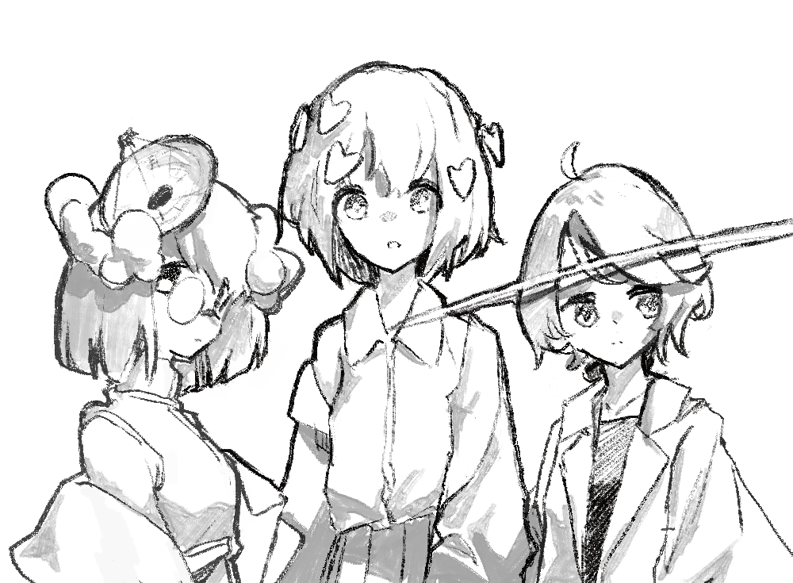

𝐼𝑑𝑒𝑜𝑎𝑣𝑒𝑠 ( 𝑡ℎ𝑒𝑦 )
Ideoavesイデオアベスと読みます。もともとみなさんが鳥類𝑎𝑣𝑒𝑠だったのですが、木葉はづく以外は生命を辞めてしまいました。
のホームページ
このウェブサイトは5-6年間の継ぎ足しで改変されてきました。
20年頃、JSでランダムな数値を出してカウンターと称していた個人サイトから始まり、現在はコレクティブのワークスをまとめるサイトになっています。
今もなお気分次第で工事中です。
へようこそ。
Ideoavesは、映像作家の木葉はづく、絵描きの折メ思案、
その他の表現試作趣味では写真撮影、空想地図や架空言語などをしています。𝙸𝚍𝚎𝚘𝚊𝚟𝚎𝚜ではディレクションの補佐的な位置にいます。
をするph環yimiruなどからなる
バーチャル・コレクティブIdeoavesについて｜Note
です。特に誰か定まっていない制作は📡Discordやコミュニティでお目にかかるかもしれませんが、好きに呼んでください。アカウントは共用です。 を名乗っています。


link
banner自由にリンクしてください。

<a href="https://ideoaves.github.io"><img
src="https://ideoaves.github.io/banner.png"></a>
コピーしました。元画像は200x50のサイズになっています。適宜調整してください。
link